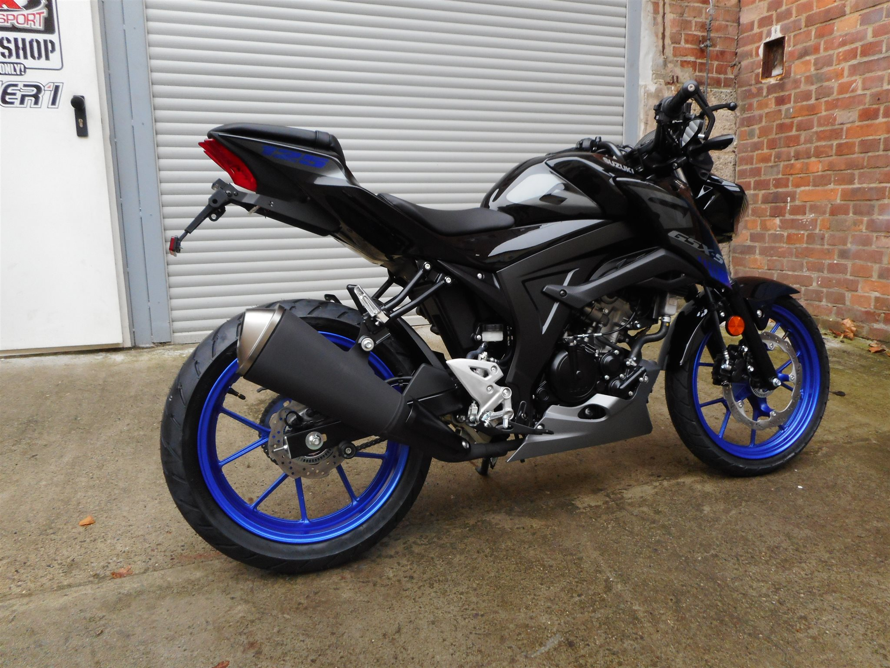
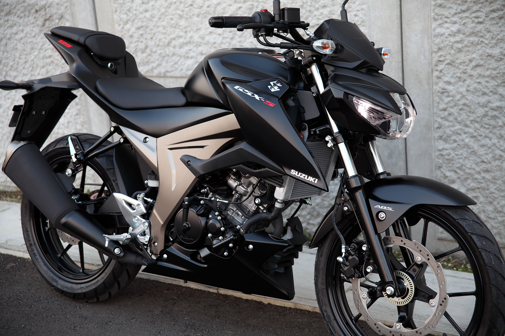
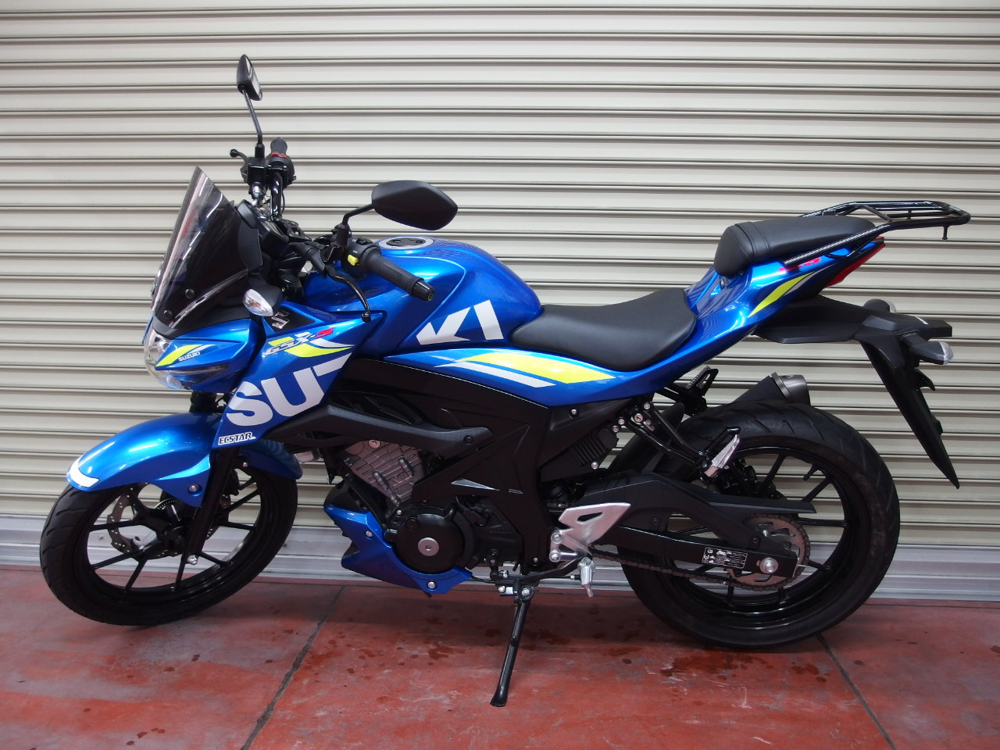
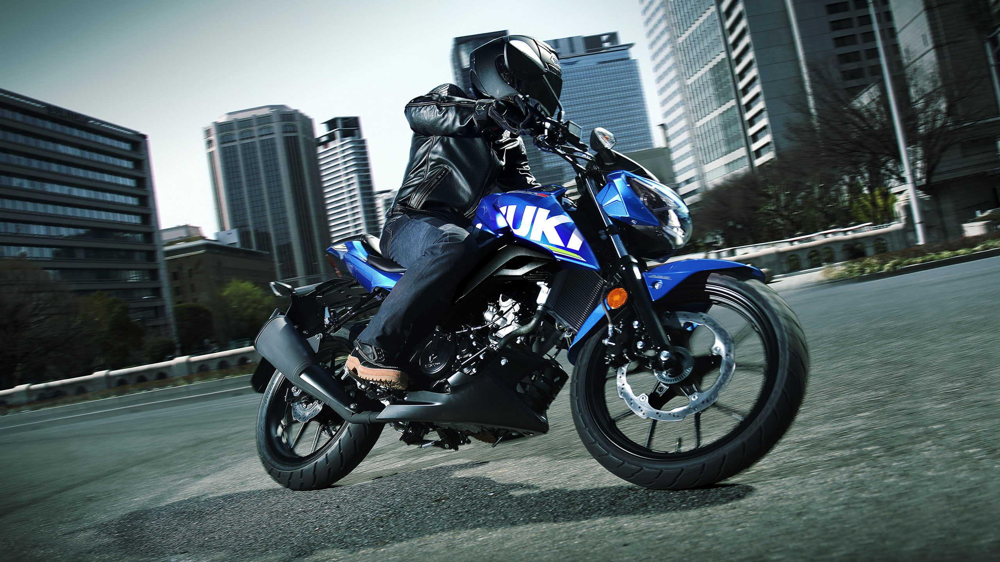
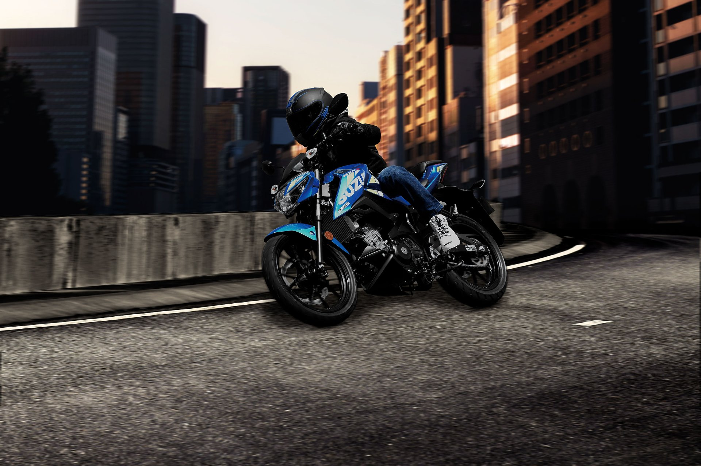

SUZUKI
SUZUKI
Is a lightweight street sport motorcycle that is both easy to ride and delivers high performance².
The GSX-S125 is powered by a single cylinder, liquid cooled, DOHC (Double Over Head Cam) engine². This engine is a perfect example of how to make a lot of power out of a very efficient and compact power plant². This power combines with strong torque and exceptional fuel economy, to create an engine worthy of the GSX-S marque¹.
The chassis design of the GSX-S125 is light and compact, giving the rider ultimate control on the streets for a fast and agile ride¹. For a street bike, low weight is key, this helps deliver a bike with responsive and rewarding handling as well as added confidence on the street². Contributing to the bike's low weight are the 10 spoke cast aluminium wheels¹. Having lightweight wheels helps ensure great handling, for a ride that’s fun and a machine that goes exactly where you want it to².
The GSX-S125 has the latest Bosch ABS 10 base unit, which is the lightest and most compact two-channel ABS system on the market¹. The sporty-looking petal-design 290mm front disc works with a dual-piston caliper and the 187mm petal-design rear disc works with a single-piston caliper, both delivering excellent braking performance¹.
The GSX-S125 is equipped with telescopic, coil spring, oil damped front suspension that provides a smooth and controlled ride. The front suspension is well-damped and firm enough to be competent both in town and out in the twisties. The rear features a link type, coil spring, oil damped suspension. It reacts efficiently to varying road surfaces to maintain an agile and stable feel. Both the front and rear suspensions contribute to a comfortable and responsive ride on various road conditions.
As of 2024, the GSX-S125 is available for £4,799¹.